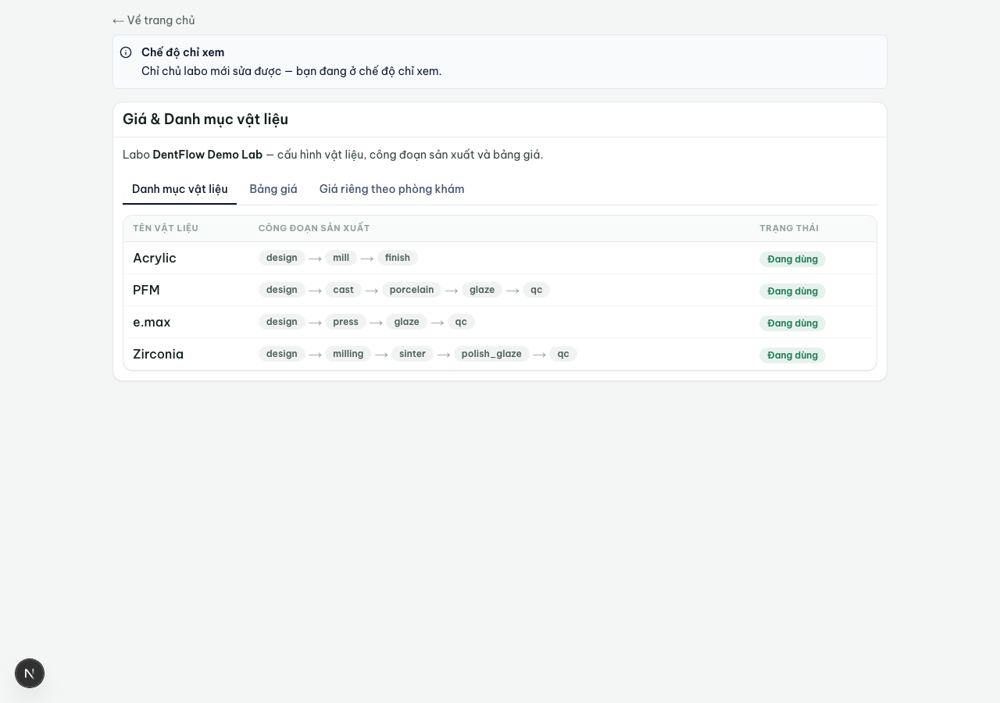
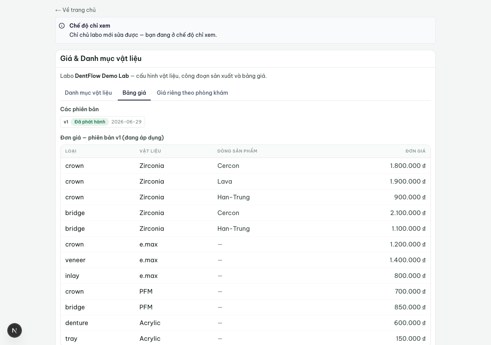
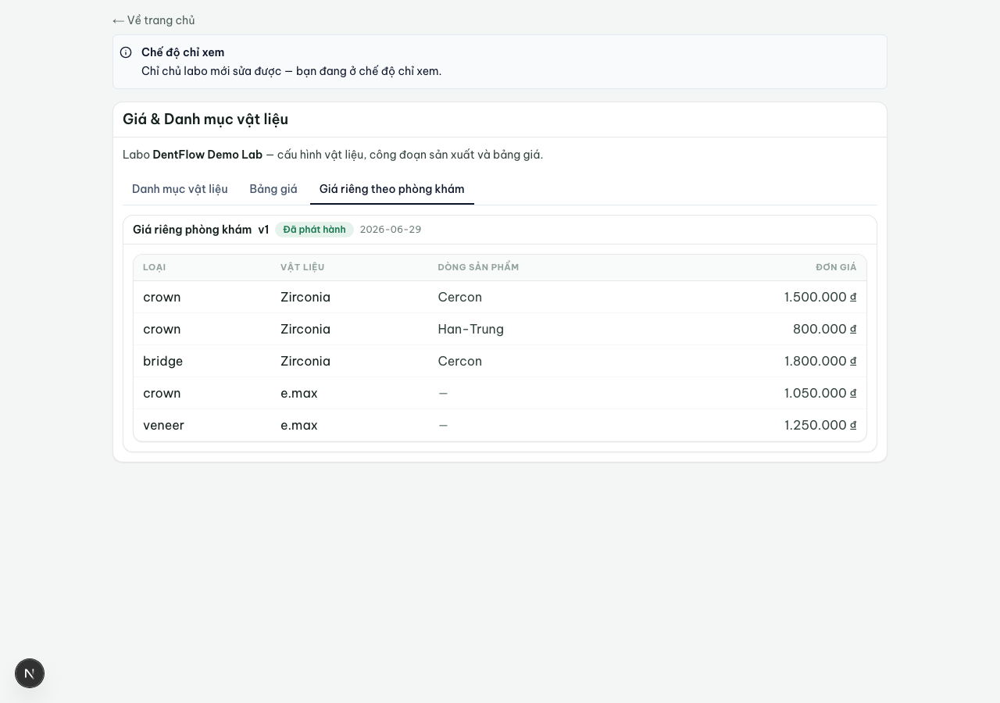

Bảng giá & vật liệu
Khai một lần: danh mục vật liệu kèm công đoạn, và bảng giá theo đơn vị. Sau đó mọi đơn tự suy ra làm những công đoạn nào và giá bao nhiêu — không phải nhập tay, dò Excel mỗi lần.
Đây là cấu hình gốc mà cả sản xuất lẫn công nợ phụ thuộc vào: không có nó thì không định giá được work order, không biết áp công đoạn (production stage) nào. Chủ labo khai material catalog (danh mục vật liệu) và price list (bảng giá); kỹ thuật viên chỉ đọc — thấy công đoạn áp cho case và giá đã chốt, không sửa được.

Danh mục vật liệu & công đoạn
Mỗi mục material trong catalog khai báo chuỗi production stage tương ứng — ví dụ zirconia → design → milling → sinter → polish/glaze → QC. Khi một work order được tiếp nhận, hệ thống đọc catalog để xác định chuỗi công đoạn phải làm cho từng unit; kỹ thuật viên không phải chọn tay.
Nếu catalog khai thiếu công đoạn cho một material thì đơn dùng material đó không suy được chuỗi stage → hệ thống chặn tiếp nhận và báo cấu hình thiếu, thay vì cho chạy một case không có công đoạn.
Bảng giá theo đơn vị & material
Giá VN tính theo đơn vị/răng (restoration/unit), phân bậc theo material và thường theo dòng sản phẩm/phôi (ví dụ zirconia Cercon khác zirconia phôi Hàn–Trung). Một dòng giá = một bộ (loại unit, material, dòng sản phẩm) → đơn giá VND/đơn vị. Bậc giá điển hình:
| Bậc | Dòng vật liệu |
|---|---|
| Cao nhất | Zirconia (phôi cao cấp) |
| e.max | |
| PFM / sứ kim loại | |
| Thấp nhất | Acrylic / nhựa |
Mọi giá tính bằng VND, số nguyên đồng (không phần thập phân). Tổng tiền một đơn = Σ (đơn giá × số đơn vị) theo từng unit. Nếu một (unit × material) trên đơn không có dòng giá tương ứng, đơn được đánh dấu "thiếu giá" để chủ labo định giá thủ công — không tự gán giá 0.

Phiên bản giá & chốt cứng vào đơn
Giá có phiên bản (versioning): mỗi lần xuất bản tạo một phiên bản mới kèm ngày hiệu lực; phiên bản cũ giữ nguyên để truy lại giá đã áp. Khi tạo/tiếp nhận một work order, hệ thống tự áp giá từ phiên bản đang hiệu lực và chốt cứng giá đó vào đơn — sửa bảng giá sau này không đổi giá các đơn đã chốt. Đây là điều kiện để công nợ và sao kê xuôi dòng luôn khớp với con số tại thời điểm giao.
Không cho xoá cứng một material/dòng giá đang được đơn tham chiếu; chỉ cho ngừng hiệu lực (archive) để giữ truy vết. Material bị archive nhưng còn đơn đang chạy thì công đoạn của đơn đó không đổi.
Giá riêng theo phòng khám
Ngoài bảng giá gốc (giá sỉ mặc định của labo), chủ labo có thể đặt mức giá riêng cho từng phòng khám (clinic override) — labo cho phòng khám A mức giá khác phòng khám B. Khi định giá một đơn, hệ thống ưu tiên override của phòng khám đặt đơn; không có override thì rơi về bảng giá gốc. Override cũng theo (unit × material × dòng sản phẩm) và cũng được versioning + chốt cứng như bảng gốc.
Bảng giá sỉ và mọi override là dữ liệu nhạy cảm cạnh tranh: một phòng khám chỉ thấy giá áp cho chính nó, không thấy giá của phòng khám khác.
